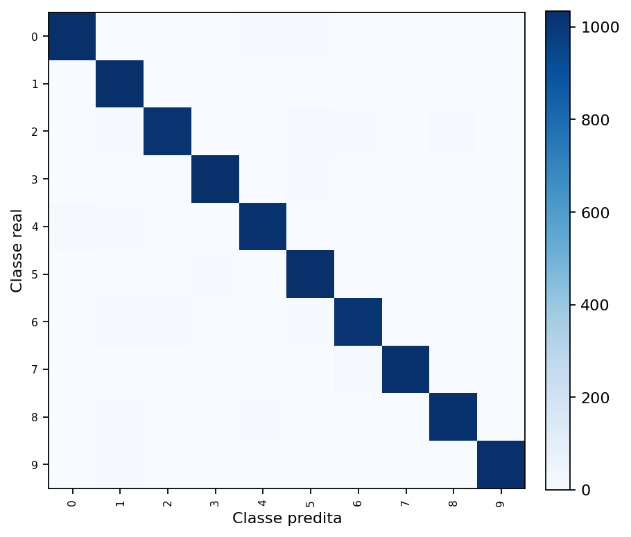
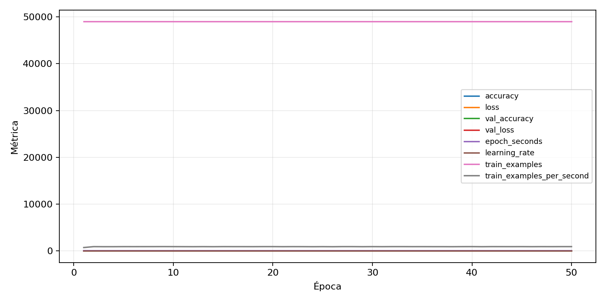

| n_samples | 10500 |
|---|---|
| loss | 0.12145436555147171 |
| accuracy | 0.9774285714285714 |
| balanced_accuracy | 0.9774285714285714 |
| macro_f1 | 0.9774286686970817 |


| Índice | Classe | Suporte | Precisão | Recall | F1 |
|---|---|---|---|---|---|
| 0 | 0 | 1050 | 0.9810066476733144 | 0.9838095238095238 | 0.9824060865430339 |
| 1 | 1 | 1050 | 0.9653882132834425 | 0.9828571428571429 | 0.9740443605474279 |
| 2 | 2 | 1050 | 0.9768115942028985 | 0.9628571428571429 | 0.9697841726618706 |
| 3 | 3 | 1050 | 0.9847182425978988 | 0.981904761904762 | 0.9833094897472581 |
| 4 | 4 | 1050 | 0.9742612011439467 | 0.9733333333333334 | 0.9737970462124822 |
| 5 | 5 | 1050 | 0.9681945743685687 | 0.9857142857142858 | 0.976875884851345 |
| 6 | 6 | 1050 | 0.9713467048710601 | 0.9685714285714285 | 0.9699570815450643 |
| 7 | 7 | 1050 | 0.9818007662835249 | 0.9761904761904762 | 0.9789875835721107 |
| 8 | 8 | 1050 | 0.9846301633045149 | 0.9761904761904762 | 0.9803921568627451 |
| 9 | 9 | 1050 | 0.9866156787762906 | 0.9828571428571429 | 0.984732824427481 |
{"adapter":"kmnist","balance_mode":"all_raw","class_names":["0","1","2","3","4","5","6","7","8","9"],"dataset":"kmnist","dataset_options":{},"dataset_root":"/home/msduda/datasets-tcc/kmnist","native_channels":1,"normalization":"unit_interval","num_classes":10,"protocol":{"checkpoint_monitor":"val_macro_f1","dtype_policy":"mixed_float16","early_stopping":{"patience":50,"restore_best_weights":true},"evaluation_augmentation":false,"input_channels":"native","optimizer":"Adam","pretrained_weights":false,"reduce_lr_on_plateau":{"factor":0.3,"min_lr":1e-07,"patience":50},"resize":"proportional_padding","test_time_augmentation":false,"training_from_scratch":true},"seed":42,"source_fingerprint":"8928d478d8d23938a73b4f4a92c407bf3d74beff1e0e67e3644d6ecdc30cf828","source_manifest":{"class_names":["0","1","2","3","4","5","6","7","8","9"],"joined_samples":70000,"metadata":{"layout":"kmnist-component-npz"},"name":"kmnist","native_channels":1,"source_path":"/home/msduda/datasets-tcc/kmnist","splits":{"test":10000,"train":60000},"target_size":64},"target_size":64,"test_fraction":0.15,"train_fraction":0.7,"training":{"augmentation":{"brightness_delta":0.0,"contrast_lower":1.0,"contrast_upper":1.0,"cutout_max_frac":0.0,"cutout_prob":0.0,"flip_lr":false,"noise_std":0.0,"translate_frac":0.0,"zoom_max":1.0,"zoom_min":1.0},"batch_size":352,"default_image_size":64,"dtype_policy":"mixed_float16","early_stopping_patience":50,"extra_fraction":0.0,"image_size_overrides":{"gtsrb":128},"keras_verbose":1,"learning_rate":0.0003,"max_epochs":50,"preprocess_cache_max_mib":0,"reduce_lr_factor":0.3,"reduce_lr_min_lr":1e-07,"reduce_lr_patience":50,"shuffle_buffer_max_mib":0},"validation_fraction":0.15}
{"epochs_completed":50,"epochs_recorded":50,"evaluation_seconds":18.766271257998596,"fit_seconds_current_attempt":3191.639616687,"max_epoch_seconds":67.30463291400156,"max_epochs":50,"mean_epoch_seconds":53.64349229421983,"mean_train_examples_per_second":914.4591096389989,"median_train_examples_per_second":920.1207722012022,"min_epoch_seconds":52.621393255998555,"selected_checkpoint":"/mnt/e/tcc-benchmark/outputs/kmnist-alldata-noaug-batch-sweep-2026-08-06/batch-352/kmnist/runs/kmnist__unit_interval__all_raw__seed-42/checkpoints/best.keras","total_seconds":2682.1746147109916,"training_seconds":2682.1746147109916,"wall_seconds_current_attempt":3214.2414810510018}
{"elapsed_seconds":3214.289108072,"event_counts":{"data_preparation_end":1,"data_preparation_start":1,"epoch_end":50,"evaluation_end":1,"evaluation_start":1,"fit_end":1,"fit_start":1,"periodic":634,"run_completed":1,"train_start":1},"generated_at":"2026-08-08T02:00:19.397+00:00","gpu_backend":"pynvml","interval_seconds":5.0,"metrics":{"cpu_percent":{"count":692,"max":17.0,"mean":13.028612716763005,"min":0.0,"p50":13.2,"p95":16.3},"disk_data_free_bytes":{"count":692,"max":998271107072.0,"mean":998271045785.896,"min":998271037440.0,"p50":998271045632.0,"p95":998271045632.0},"disk_data_percent":{"count":692,"max":2.7,"mean":2.7,"min":2.7,"p50":2.7,"p95":2.7},"disk_data_total_bytes":{"count":692,"max":1081101176832.0,"mean":1081101176832.0,"min":1081101176832.0,"p50":1081101176832.0,"p95":1081101176832.0},"disk_data_used_bytes":{"count":692,"max":27837784064.0,"mean":27837775718.104046,"min":27837714432.0,"p50":27837775872.0,"p95":27837775872.0},"disk_output_free_bytes":{"count":692,"max":207161524224.0,"mean":207148599207.21387,"min":207147638784.0,"p50":207148503040.0,"p95":207148754739.2},"disk_output_percent":{"count":692,"max":79.3,"mean":79.3,"min":79.3,"p50":79.3,"p95":79.3},"disk_output_total_bytes":{"count":692,"max":1000186310656.0,"mean":1000186310656.0,"min":1000186310656.0,"p50":1000186310656.0,"p95":1000186310656.0},"disk_output_used_bytes":{"count":692,"max":793038671872.0,"mean":793037711448.7861,"min":793024786432.0,"p50":793037807616.0,"p95":793038581760.0},"elapsed_seconds":{"count":692,"max":3214.23354,"mean":1611.0837390823701,"min":0.030335,"p50":1609.040829,"p95":3069.3109225},"gpu_count":{"count":692,"max":1.0,"mean":1.0,"min":1.0,"p50":1.0,"p95":1.0},"gpu_memory_percent":{"count":692,"max":52.32901573181152,"mean":50.41022314501635,"min":38.288307189941406,"p50":52.17337608337402,"p95":52.31146812438965},"gpu_memory_total_bytes":{"count":692,"max":8589934592.0,"mean":8589934592.0,"min":8589934592.0,"p50":8589934592.0,"p95":8589934592.0},"gpu_memory_used_bytes":{"count":692,"max":4495028224.0,"mean":4330205195.83815,"min":3288940544.0,"p50":4481658880.0,"p95":4493520896.0},"gpu_temperature_c":{"count":692,"max":51.0,"mean":42.471098265895954,"min":39.0,"p50":42.0,"p95":49.0},"gpu_utilization_percent":{"count":692,"max":100.0,"mean":19.92630057803468,"min":1.0,"p50":8.0,"p95":54.0},"process_cpu_percent":{"count":692,"max":218.4,"mean":171.26806358381504,"min":0.0,"p50":175.7,"p95":212.9},"process_read_bytes":{"count":692,"max":10067968.0,"mean":10058698.7283237,"min":7933952.0,"p50":10067968.0,"p95":10067968.0},"process_rss_bytes":{"count":692,"max":4110786560.0,"mean":3838682117.919075,"min":1029935104.0,"p50":4027002880.0,"p95":4089925222.4},"process_vms_bytes":{"count":692,"max":48978317312.0,"mean":48544915680.92486,"min":39580246016.0,"p50":48693788672.0,"p95":48977268736.0},"process_write_bytes":{"count":692,"max":1171456.0,"mean":1157291.6531791908,"min":4096.0,"p50":1171456.0,"p95":1171456.0},"ram_available_bytes":{"count":692,"max":15539494912.0,"mean":12895387861.086704,"min":12625920000.0,"p50":12709740544.0,"p95":13512244633.6},"ram_percent":{"count":692,"max":24.0,"mean":22.409537572254333,"min":6.5,"p50":23.5,"p95":23.9},"ram_total_bytes":{"count":692,"max":16619085824.0,"mean":16619085824.0,"min":16619085824.0,"p50":16619085824.0,"p95":16619085824.0},"ram_used_bytes":{"count":692,"max":3993165824.0,"mean":3723697962.913295,"min":1079590912.0,"p50":3909345280.0,"p95":3974351462.4}},"sample_count":692,"schema_version":1}